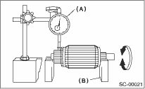
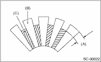
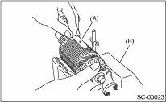
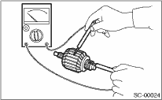
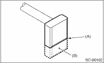
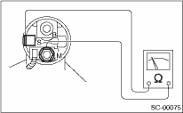
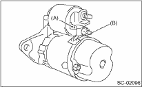
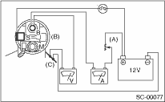

STARTING/CHARGING SYSTEMS(H4SO) > Starter
1. Check the commutator for signs of seizure or stepped wear caused by roughness of the surface. If there is light wear, use sandpaper to repair.
2. Run-out test
Check for run-out on the commutator. If excessive, replace it.
Commutator run-out:
Standard
0.05 mm (0.0020 in)
Service limit
0.10 mm (0.0039 in) or less

|
(A) |
Dial gauge |
|
(B) |
V-block |
3. Depth of segment mold
Check the depth of the segment mold.
Depth of segment mold:
0.5 mm (0.020 in)

|
(A) |
Depth of mold |
|
(B) |
Segment |
|
(C) |
Mold |
4. Armature short-circuit test
Place the armature on the growler tester to check for short circuits. While slowly turning the armature, support the steel seat for the armature core. If the circuit of the armature is shorted, the steel seat will vibrate, causing it to move towards the core. When the steel seat has moved or vibrated, replace or repair the armature with the shorted circuit.

|
(A) |
Steel seat |
|
(B) |
Growler tester |
5. Armature ground test
Use a circuit tester to touch the probe of one side to the commutator segment, and the other probe to the shaft. If there is no continuity, it is normal. If there is continuity, the armature is grounded.
If grounded, replace the armature.

Make sure that the pole is set at the predetermined position.
Check that there is no wear or damage to the piston teeth. Replace if damaged. If it rotates smoothly when rotated in the correct direction (counterclockwise) and does not return to the other direction, it is normal.
CAUTION:
To prevent spilling of grease, do not clean the overrunning clutch with oil.
1. Brush length
Measure the length of the brush. If it exceeds service limits, replace it.
Replace if there is abnormal wear or cracks.
Brush length:
Standard
12.3 mm (0.484 in)
Service limit
7.0 mm (0.276 in)

|
(A) |
Service limit line |
|
(B) |
Brush |
2. Brush movement:
Check that the brush moves smoothly in the brush holder.
3. Brush spring force
Measure the brush spring force with a spring scale. Replace the brush holder if below the service limit.
Brush spring force:
Standard
15.9 — 19.5 N (1.62 — 1.99 kgf, 3.57 — 4.38 lbf) (When new)
Service limit
2.5 N (0.25 kgf, 0.56 lbf)
Using a circuit tester (set to "ohm"), check that there is continuity between terminals S and M, and between terminal S and ground.
Also check to be sure there is no continuity between terminal M and B.
Terminal / Resistance:
S — M/1 Ω or less
S — Ground/1 Ω or less
M — B/1 MΩ or more

1. Using a lead wire, connect the terminal S of switch assembly to positive terminal of battery, and starter body to ground terminal of battery. The pinion should be forced endwise on shaft.
NOTE:
With the pinion forced endwise on shaft, starter motor can sometimes rotate because current flows, through pull-in coil, to motor. This is not a problem.
2. Disconnect the connector from terminal M. Then using a lead wire, connect the positive terminal of battery and terminal M and ground terminal to starter body.
In this test set up, the pinion should return to its original position even when it is pulled out with a screwdriver.

|
(A) |
Terminal S |
|
(B) |
Terminal M |
The starter should be submitted to performance tests whenever it has been overhauled, to assure its satisfactory performance when installed on the engine.
Three performance tests, no-load test, load test, and lock test, are presented here; however, if the load test and lock test cannot be performed, carry out at least the no-load test.
For these performance tests, use the circuit shown in figure.

|
(A) |
Variable resistance |
|
(B) |
Starter body |
|
(C) |
Magnetic switch |
1. No-load test
With switch on, adjust the variable resistance until the voltage is 11 V, read the value of ammeter to measure starter speed. Compare these values with the standard.
No-load test (Standard):
Voltage/Current
MT model
Max. 11 V / 95 A
AT model
Max. 11 V / 90 A
Rotating speed
MT model
2,500 rpm or more
AT model
2,000 rpm or more
2. Load test
Apply the specified braking torque to starter. The condition is normal if the current draw and starter speed are within standard.
Load test (Standard):
Voltage/Load
MT model
7.5 V/8.84 N (0.90 kgf, 1.99 lbf)
AT model
7.7 V/16.7 N (1.70 kgf, 3.75 lbf)
Current/Speed:
MT model
300 A/870 rpm or more
AT model
400 A/710 rpm or more
3. Lock test
With the starter stalled, or not rotating, measure the torque developed and current draw when the voltage is adjusted to standard voltage.
Lock test (Standard):
Voltage/Current
MT model
4 V/680 A or less
AT model
3.5 V/960 A or less
Torque
MT model
17.0 N (1.73 kgf, 3.82 lbf) or more
AT model
31.0 N (3.16 kgf, 6.97 lbf) or more